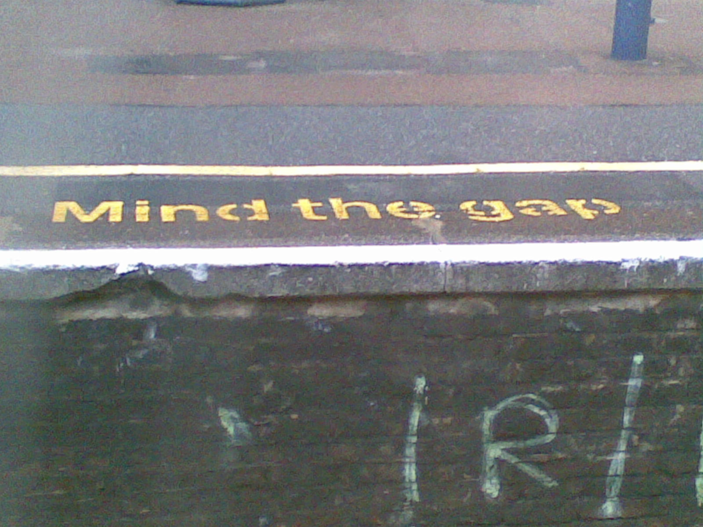

Portfolio
-
setup-wait

Provides the :defer-incrementally keyword from Doom Emacs to the setup macro.
"Stop Sign" by metal4rock is licensed under CC BY 2.0

 .
. -
mpc-wrapper

Provides an elisp wrapper around the mpc command line program.
-
Trimmer

A small c program for trimming down csv files from Moodle.
"Scissors" by James Bowe is licensed under CC BY 2.0
. -
Portfolio Site
The website you see before your very eyes.
"folder" by allispossible.org.uk is licensed under CC BY 2.0
. -
Fork of EXWM Outer Gaps
Extension for exwm. Puts a gap around all emacs frames. To the best of my knowledge, my fork is the only version of the package that still works.
"mind the gap" by osde8info is licensed under CC BY-SA 2.0
 .
.